Thursday, June 19, 2014
Ruby Blocks, Procs and Lambdas
When you're coding in Ruby, you will occasionally need to reuse a block of code. Unfortunately, blocks can only be "reused" by copying the code. This is where procs and lambdas can help. Procs and lambdas are basically blocks of code that are saved as objects so they can be reused within a program.
Today we're going to review the differences among blocks, procs and lambdas so you can determine how to use them in your code. To start, here's a comparison of these three features:
|
Is it
an object? |
Structure |
Can it be
reused? |
Checks number of
arguments? |
Returns to
calling method? |
| Blocks |
Nope |
Contained within {...}
or do...end syntax |
Nope,
single use only |
N/A |
N/A |
| Procs |
Yep,
a Proc object |
Proc.new {block}* |
Yep |
Nope |
Nope,
stops at return and
returns value |
| Lambdas |
Yep,
a Proc object |
lambda {|param| block}* |
Yep |
Yep |
Yep, returns value
and continues method |
|
*There are other structures for procs and lambdas, but these are the most common |
Blocks
Blocks are sections of code contained within curly braces,
{...}, or
do...end syntax. Here's an example of a block:
Block Example:
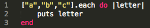
Block Result:
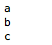
In this example, the block is contained within the
do...end syntax. On line 1, the block was combined with the
each method to iterate through an array (["a","b","c"]).
You can see in the result that this block printed out each letter in the array.
If you wanted to run the block on another array, you would need to copy the entire block. If you wanted to save the block as an object, procs and lambdas would provide a good solution. They are especially helpful when you anticipate you'll be using a block of code more than once in a program.
Let's start by reviewing procs...
Procs
Procs, or procedures, basically allow you to create a Proc object from a block. This gives you the flexibility to reuse the code. Let's take the block above and make it a proc.
Proc Example 1:
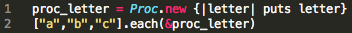
Proc Result 1:
In line 1 of the code, you'll see that we created a new Proc object, using the
Proc.new {...} syntax, named proc_letter that contains the block. In line 2, we combined the Proc object with the
each method, just like we did with the original block. The
& was added to turn the proc into a block since the
each method expects a block.
You can see in the result that this proc printed out each letter in the array, just like the original block.
Procs & Arguments
Now that we've seen an example of a proc, let's take a look at how it handles arguments. When a proc is called, it does not check the number of arguments it receives. If there are more arguments than needed, the proc will just execute the number of arguments it expected. Let's look at an example:
Proc Example 2:
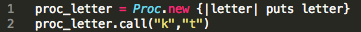
Proc Result 2:
First, you'll notice that we tweaked proc_letter so that it will
puts the letter instead of
return. We added the
puts to ensure the letter was being printed since we did not use the
each method in this example. This brings us to the second change: in order to show you how procs handle arguments, we used the
call method to run proc_letter. Again, this is just a different way of running the proc in order to show you how it handles arguments.
Now let's look at what happened when we ran the code. In line 2 of the code, the Proc object was called using the
call method and two arguments were passed in: letters "k" and "t". Looking at the result, we see that only letter "k" was printed. Since the block of code in proc_letter only expected one argument, it ignored letter "t". This shows how procs ignore arguments when executing a block of code.
Procs & return Statements
Another characteristic of a proc is that it stops at a
return statement and immediately returns a value without going back to the method that called it. Let's take a look at how this works:
Proc Example 3:
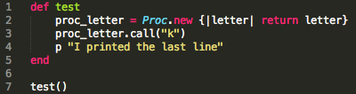
Proc Result 3:
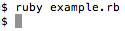
In example 3, we took Proc Example 2 and placed the Proc object in a new method called
test. We changed
puts back to
return since we are testing how procs handle the
return statement. In line 3, we called proc_letter by using the
call method and passed in the letter "k". In line 4, we told the method to
puts "I printed the last line". Then in line 7, we called the
test method to see what would happen.
In the result, you'll see that we ran the Ruby file, but it did not
puts "I printed the last line". Here's what happened: When the
test method started running, it called proc_letter in line 3 and started executing line 2. When the proc ran into the return statement in line 2, it returned the letter "k" and then stopped. Line 4 was never executed since procs stop after they encounter
return statements.
Now that we've seen how procs work, let's take a look at how lambdas differ from procs...
Lambdas
Lambdas are Proc objects, just like procs and they allow you to save and reuse a block of code. Let's take Proc Example 1 and make it into a lambda:
Lambda Example 1:
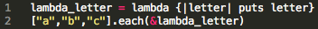
Lambda Result 1:
The block contained within lambda_letter is the same as the block contained within Proc Example 1 and the only difference is the syntax: lambda
{...}. As for the result, it's the same as the result from Block Example and Proc Example 1.
As you probably noticed in the comparison table, the main differences between lambdas and procs are the ways they handle arguments and methods.
Lambdas & Arguments
Let's take a look at how lambdas check arguments by creating a lambda that contains the same block as Proc Example 2:
Lambda Example 2:
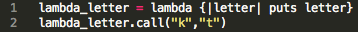
Lambda Result 2:
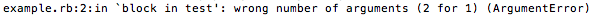
Once again, the block contained within lambda_letter is the same as the block contained within Proc Example 2 and the only difference is the syntax: lambda
{...}.
In line 2, lambda_letter was called using the
call method and two arguments were passed in: letters "k" and "t". Unlike procs, lambdas check arguments. Since the block of code in lambda_letter only expected one argument and it received two, it raised an argument error, as you can see in Lambda Result 2.
Lambdas & return Statements
Now let's see how the
test method would look if we used a lambda by creating a lambda that contains the same block as Proc Example 3:
Lambda Example 3:
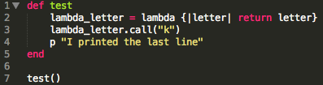
Lambda Result 3:
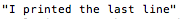
In line 2, the block contained within lambda_letter is the same as the block contained within Proc Example 3 and the only difference is the syntax: lambda
{...}.
In the result, you'll see that the code
puts "I printed the last line". Here's what happened: When the
test method started running, it called lambda_letter in line 3 and started executing line 2. When the lambda ran into the return statement in line 2, it returned the letter "k". Unlike the proc, the lambda did not stop there. It continued through the rest of the method and executed line 4, printing "I printed the last line".
Summary
Now that you understand the differences among blocks, procs and lambdas, you should have a good idea of how to use them in your own code. Try using a proc or lambda in your next program!
For more information on procs and lambdas, check out one of the following sites: